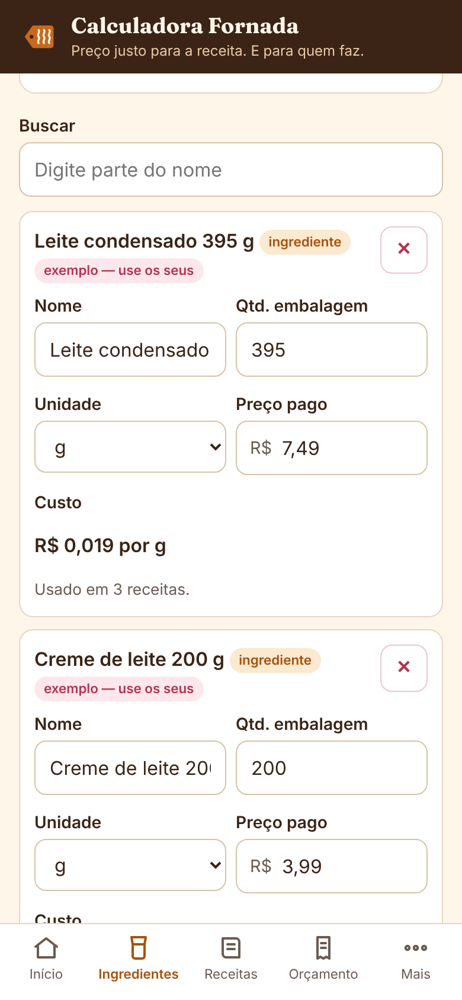
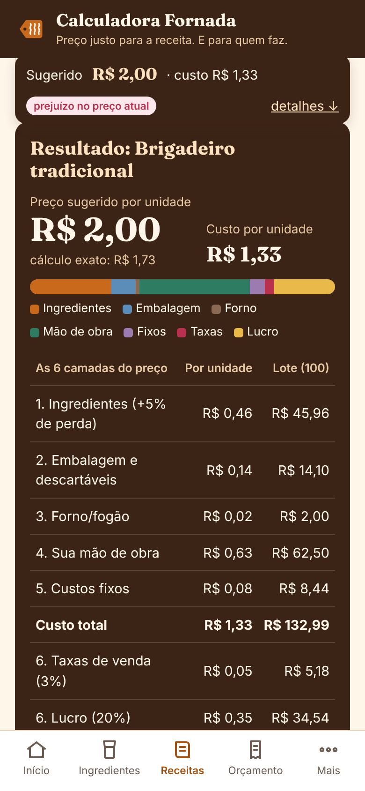
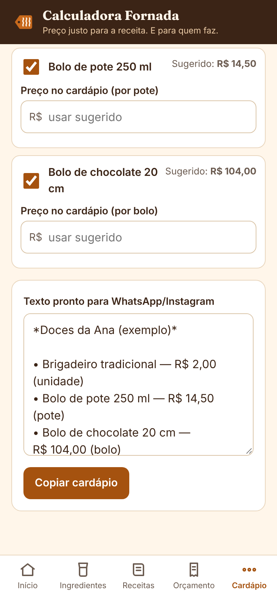
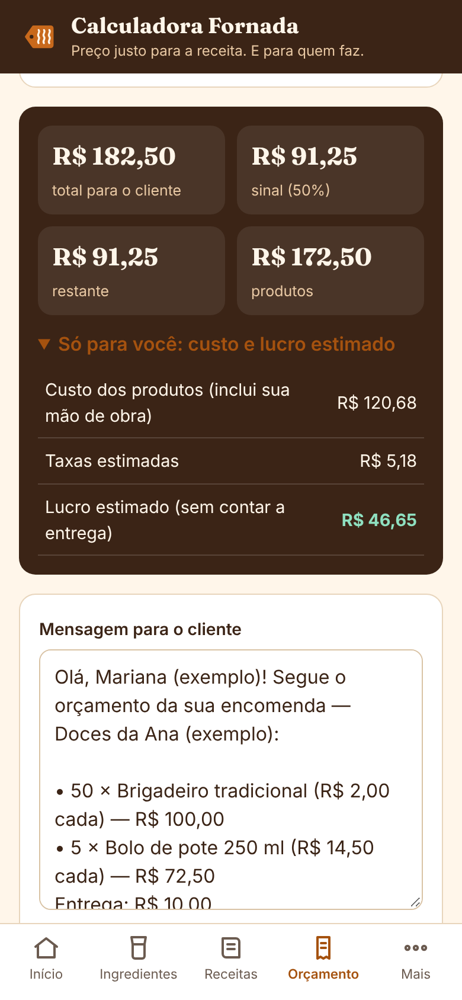

“Vendi tudo… e cadê o dinheiro?”
Se você vende comida feita em casa, talvez já tenha vivido isso: a semana foi cheia de encomendas, a cozinha não parou, mas no fim do mês o dinheiro parece ter sumido.
Na maioria das vezes, o problema não é falta de venda. É o preço calculado só pelos ingredientes. Ficam de fora coisas que custam caro, mas não aparecem na nota do mercado:
- O gás e a energia do forno ligado por horas
- A embalagem, o forminho, a fita, a etiqueta, a colher descartável
- As perdas: a massa que fica na tigela, o docinho que quebra, a fatia de prova
- As contas do mês: internet, MEI, parte da luz e da água
- A taxa da maquininha ou do aplicativo de entrega
- E, principalmente, as horas do seu trabalho
Quando esses itens ficam fora da conta, quem paga a diferença é você — com o seu tempo ou com dinheiro do orçamento da casa.
O método das 6 camadas do preço
A Fornada Lucrativa organiza o preço em seis camadas, sempre na mesma ordem. Você não precisa saber matemática: precisa saber o que gasta. A calculadora faz as contas.
Ingredientes
Pela ficha técnica, considerando quanto a receita rende e quanto se perde.
Embalagem
Tudo o que vai junto com o produto: caixa, forminho, fita, etiqueta, talher.
Gás e energia
Pelo tempo em que o forno fica ligado para aquela fornada.
Sua mão de obra
O valor da sua hora vezes o tempo que você trabalha na receita.
Custos fixos
As contas do mês divididas pelas suas horas de produção.
Taxas e lucro
Para que a maquininha ou o aplicativo não “comam” o seu ganho.
Preço sugerido = custo por unidade ÷ (1 − taxas − margem de lucro)
No guia, você vê cada camada explicada com um exemplo resolvido do começo ao fim. Na calculadora, só preenche os seus números.
Números claros para decidir com segurança
- Saber o custo de cada unidade, não só da receita inteira: quanto custa um brigadeiro, uma fatia, uma marmita.
- Descobrir quais produtos dão lucro e quais estão empatando — ou dando prejuízo — comparando com o preço que você cobra hoje.
- Atualizar o preço de um ingrediente em um só lugar: quando o leite condensado sobe, todas as receitas que usam ele são recalculadas.
- Colocar a sua hora na conta de um jeito simples, a partir de quanto você quer tirar por mês.
- Ter um preço arredondado pronto para o cardápio, sem centavos quebrados.
- Montar orçamentos de encomenda com vários itens, taxa de entrega e sinal, prontos para o WhatsApp.
- Saber quantas unidades vender para chegar à meta de ganho que você definiu para o mês.
- Ter as palavras certas para avisar de um reajuste, cobrar sinal e explicar sua política de encomendas.
Um kit em que cada peça tem uma função
Calculadora Fornada
A peça central do kit. Funciona no navegador do celular e do computador, sem instalar nada e sem criar conta. Ingredientes, fichas técnicas, preço sugerido, cardápio, orçamentos e metas.
Guia Fornada Lucrativa
O método das 6 camadas, passo a passo, com exemplos resolvidos: ficha técnica, valor da sua hora, custos fixos, taxas, teste com o mercado do seu bairro e como reajustar sem perder clientes. Fecha com um plano de 7 dias.
Caderno de Fichas e Mensagens
Ficha técnica em branco, levantamento de custos fixos, checklist de precificação, modelo de orçamento, registro semanal e o Kit de Mensagens: reajuste, orçamento, sinal e política de encomendas.
Planilha de Controle do Mês
Abre no Excel e no Google Planilhas. Registre encomendas, vendas e despesas e veja o resultado do mês comparado com a sua meta.
A Calculadora Fornada, no seu celular
Você cadastra os ingredientes com o preço e o tamanho da embalagem que compra, monta a ficha técnica de cada receita (rendimento, perdas, tempo de trabalho e de forno) e configura uma vez o valor da sua hora, os custos fixos, o custo do forno e as taxas. A calculadora mostra o custo por unidade, o preço sugerido e o preço arredondado — e compara com o que você cobra hoje.




Também calcula metas (quantas unidades vender para ganhar o valor que você definiu), faz backup (exportar e importar) e começa com dados de exemplo para você aprender antes de colocar os seus.
O que vem no pacote
| Item | Formato |
|---|---|
| 00 — Comece Aqui | |
| 01 — Guia Fornada Lucrativa: o método das 6 camadas do preço | |
| 02 — Caderno de Fichas e Mensagens (inclui o Kit de Mensagens) | PDF imprimível |
| 03 — Calculadora Fornada | Link para usar no navegador + arquivo HTML para uso sem internet no computador |
| 04 — Planilha de Controle do Mês | XLSX (Excel e Google Planilhas) |
Tudo é entregue de forma digital. Nenhum item físico é enviado.
Para quem é — e para quem não é
É para você se…
- vende (ou quer começar a vender) bolos, doces, salgados, marmitas, pães, tortas ou outros alimentos feitos em casa;
- calcula o preço “de cabeça” ou só pelos ingredientes e desconfia que está cobrando pouco;
- vende bastante, mas não sabe dizer quanto sobra;
- precisa reajustar preços e não sabe como explicar isso aos clientes;
- prefere uma ferramenta simples no celular a uma planilha cheia de abas.
Não é para você se…
- procura um curso de receitas ou de confeitaria — aqui não ensinamos a cozinhar;
- quer uma promessa de faturamento: o kit ajuda a calcular e decidir; o resultado depende das suas vendas e escolhas;
- precisa de um sistema completo com estoque, nota fiscal, vários usuários e sincronização na nuvem;
- já tem contabilidade de custos estruturada por um profissional.
Fornada Lucrativa — kit completo
- Guia Fornada Lucrativa (PDF)
- Calculadora Fornada (link + versão offline)
- Caderno de Fichas e Mensagens (PDF)
- Planilha de Controle do Mês (XLSX)
- Comece Aqui (PDF)
Formas de pagamento e parcelamento conforme o checkout da Kiwify.
Acesso por e-mail após a aprovação · 7 dias para pedir reembolso
Perguntas frequentes
Funciona no celular?
Sim. A calculadora foi feita para o navegador do celular (Chrome, Safari e outros atuais) e também funciona no computador. Os PDFs abrem em qualquer leitor de PDF, e a planilha abre no Excel ou no Google Planilhas.
Meus dados ficam onde?
No navegador do próprio aparelho. Nós não recebemos, não vemos e não guardamos as receitas, os preços ou os números que você digita na calculadora.
Consigo usar no celular e no computador com os mesmos dados?
Não automaticamente: não há sincronização. Você pode exportar um arquivo de backup em um aparelho e importar no outro.
Preciso de internet?
Para receber o kit e abrir a calculadora pelo link, sim. Depois de aberta, ela faz as contas no próprio aparelho. Para usar sem internet no computador, há também a versão em arquivo (HTML) dentro do kit.
Serve para salgados, marmitas, pães e outros produtos?
Sim. O método vale para qualquer alimento produzido em casa. Os exemplos do guia são principalmente de confeitaria, mas a lógica (ficha técnica, rendimento, embalagem, forno, hora, custos fixos e taxas) é a mesma.
E se eu não souber mexer em planilha?
Não tem problema. A ferramenta principal é a calculadora, com campos explicados e dados de exemplo. A planilha é um complemento para o controle do mês, e o guia ensina como preencher.
Como eu recebo?
Assim que o pagamento é aprovado, a Kiwify envia ao seu e-mail as instruções de acesso. Lá você baixa os arquivos e encontra o link da calculadora. No boleto, a liberação depende da compensação do pagamento.
Não recebi o e-mail. E agora?
Confira a caixa de spam e a aba Promoções. Se não encontrar, escreva para contato.fornadalucrativa@gmail.com informando o e-mail usado na compra.
A calculadora me diz o preço exato que devo cobrar?
Ela mostra o preço que cobre os custos que você informou, mais a margem que você escolheu. A decisão final é sua: o guia ensina a comparar esse número com o mercado da sua região e a ajustar tamanhos, porções e cardápio.
Vou ganhar mais dinheiro com o kit?
Não prometemos isso. O kit mostra quanto custa e quanto sobra em cada produto. O que você faz com essa informação — e quanto vende — é o que define o resultado.
Preciso ser MEI?
Não para usar o kit. O guia comenta os cuidados básicos para quem vende alimentos e indica onde buscar orientação oficial (Sebrae, prefeitura e vigilância sanitária), mas não substitui contador nem orientação jurídica.
Tem mensalidade?
Não. É pagamento único de R$ 37,00.
Posso pedir reembolso?
Sim. Você tem 7 dias corridos a partir da compra para pedir o reembolso integral, sem precisar justificar, diretamente pela Kiwify ou pelo e-mail de suporte.
As atualizações estão incluídas?
Correções e melhorias nos arquivos desta versão são enviadas a quem comprou, pelo mesmo e-mail de acesso. Produtos novos e diferentes podem ser vendidos separadamente.
Posso compartilhar ou revender os materiais?
O kit é para uso pessoal de quem comprou, no próprio negócio. Não é permitido revender, redistribuir ou publicar os arquivos.
Coloque cada custo na conta — inclusive você.
Você já sabe fazer a receita. A Fornada Lucrativa ajuda a fazer a conta.
Quero o kit por R$ 37Pagamento único · Acesso imediato por e-mail · 7 dias para pedir reembolso
Informações importantes
- Produto 100% digital: guias em PDF, planilha XLSX e calculadora que funciona no navegador.
- A calculadora guarda os dados no navegador do aparelho. Não há conta, login ou sincronização. Faça backups com o botão “Exportar”.
- Recomendado: celular ou computador com navegador atualizado; leitor de PDF; Excel ou Google Planilhas (gratuito) para a planilha.
- O kit traz conteúdo educativo sobre custos e preços. Não é assessoria contábil, jurídica ou financeira individual.
- Pagamento processado pela Kiwify. Os seus dados de pagamento são tratados pela plataforma.
Suporte
Dúvidas sobre acesso, arquivos ou uso da calculadora: contato.fornadalucrativa@gmail.com. Resposta em até 2 dias úteis.
Reembolso
Você pode desistir da compra em até 7 dias corridos a partir da data da compra, com reembolso integral, conforme o direito de arrependimento previsto no art. 49 do Código de Defesa do Consumidor. O pedido pode ser feito pela própria Kiwify (área de compras, com o e-mail usado no pedido) ou pelo e-mail de suporte. O estorno segue os prazos do meio de pagamento utilizado.